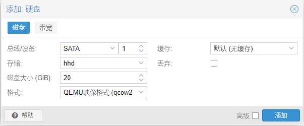
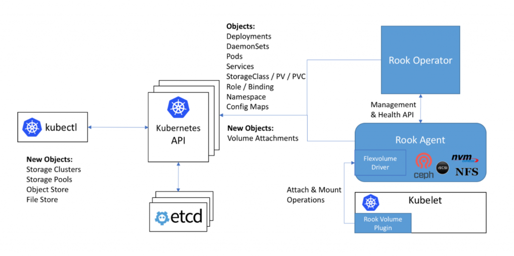

Kubernetes — 基于K8S搭建Ceph分布式存储
基于 K8S 搭建 Ceph 分布式存储
前提
- 正常运行的多节点 K8S 集群，可以是两个节点也可以是更多。
- 每一个节点需要一个
没有被分区的硬盘，最好大小一致不然会浪费。 没错其实就是一个要求，必须有集群才能进行容器管理，必须有硬盘才能做存储这些都是基础。
添加硬盘
| 主机 | IP | 磁盘 |
|---|---|---|
| master01 | 10.12.12.51 | SATA 20G |
| master02 | 10.12.12.52 | SATA 20G |
| master03 | 10.12.12.53 | SATA 20G |
| worker01 | 10.12.12.54 | SATA 20G |
| worker02 | 10.12.12.55 | SATA 20G |

在 5 个节点都加 20g 存储
重启 k8s 节点
kubectl cordon <节点>
kubectl drain <节点> --ignore-daemonsets --delete-emptydir-data
# 虚拟机重启后
kubectl uncordon <节点>
查看新增存储
fdisk -l
看到新增 20g 存储,不要格式化分区硬盘！！！
Disk /dev/sdb: 20 GiB, 21474836480 bytes, 41943040 sectors
Disk model: QEMU HARDDISK
Units: sectors of 1 * 512 = 512 bytes
Sector size (logical/physical): 512 bytes / 512 bytes
I/O size (minimum/optimal): 512 bytes / 512 bytes
ROOK 自动创建

- Rook 是一个开源的
cloud-native storage编排, 提供平台和框架；为各种存储解决方案提供平台、框架和支持，以便与云原生环境本地集成。 - Rook 将存储软件转变为自我管理、自我扩展和自我修复的存储服务，它通过自动化部署、引导、配置、置备、扩展、升级、迁移、灾难恢复、监控和资源管理来实现此目的。
- Rook 使用底层云本机容器管理、调度和编排平台提供的工具来实现它自身的功能。
- Rook 目前支持
Ceph、NFS、Minio Object Store和CockroachDB。 - Rook 使用
Kubernetes原语使Ceph存储系统能够在Kubernetes上运行。
下载
git clone https://github.com/rook/rook.git